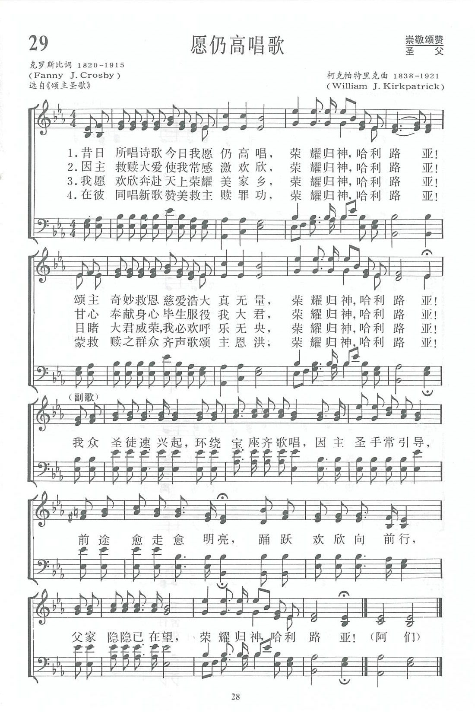

|
|
|
|
|
1. We are never, never weary of the grand old song; Refrain 2. We are lost amid the rapture of redeeming love 3. We are going to a palace that is built of gold; 4. There we’ll shout redeeming mercy in a glad, new song; |
第029首《願仍高唱歌》 |
|
|
https://www.zanmeishige.com/tab/13660.html?songbook=1&index=29

|
||
|
|
|
|


第029首《願仍高唱歌》 https://youtu.be/Xi7xcLhL9q8 -
https://youtu.be/1sLYegOW1lQ -
| Text: | Glory to God, Hallelujah |
| Author: | Fanny J. Crosby |
| Tune: | [We are never, never weary of the grand old song] |
| Composer: | Wm. J. Kirkpatrick |

Tune Information
| Title: | [We are never, never weary of the grand old song] |
| Composer: | William James Kirkpatrick |
| Incipit: | 12333 35321 66511 |
| Key: | E♭ Major |
| Copyright: | Public Domain |
第29首 愿仍高唱歌 We are never，never weary of the grand old song．_克罗斯比
经文：“我们应当靠着耶稣，常常以颂赞为祭献给上帝，这就是那承认主名之人嘴唇的果子”(来13：15)．
这首诗的词句是盲诗人克罗斯比<事略参阅第11首)所写。
曲调是美国音乐出版社工作者、宗教音乐作曲家柯克帕特里克(W．J．Kirkpatrick，1838—1921)所谱。柯氏出生于爱尔兰，自幼跟他父亲学音乐，从后受教于几个名师，青年时移居美国。南北战争时他参军，任军乐队吹笛手。1862—1878年在美国费城作家具商，并在美以美会担任义工，曾任美国费城美以美会唱诗班指挥(年青时期就一面作曲一面指挥)。他在1859年21岁时即开始编辑出版赞美诗工作，以后与斯托克顿(参阅第40首)斯威尼(参阅第65首)合编出版约一百多部宗教音乐集和书刊。
他最喜爱并谱写了不少信徒所喜爱的福音歌曲。《新编》内除这首《愿仍高唱歌》外，还有第41、78、94、235、3O4、313、342等首的曲调也是他的作品。
这首赞美诗的曲调欢快，有进行曲的风味。尤其是在副歌中，乐曲将“我众圣徒速兴起”及“踊跃欢欣向前行”的精神，以明朗的节奏、愉快的旋律表达了出来．
柯氏习惯于每天长时间工作。1921年9月29日晚上，他告诉妻子要到书房去写一首诗谱，到半夜还未见回房睡觉。当他妻子起来去看他时，只见他仍在书桌前坐着，手里握着写《主啊，我向你祈求》的笔，未完成的诗稿还平铺在桌面上，而他的灵魂已经离开了他。